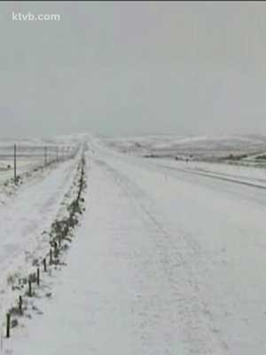

Temperatures Across Idaho Could Hurt Local Crops
The Idaho Farm Bureau Federation says onions, dry beans, sweet corn and potatoes could all be affected by the current cold spell.
BOISE, Idaho — Less than two weeks into October and already parts of Idaho are dealing with snow and very low temperatures. According to the National Weather Service, Central Idaho and the Northern Panhandle got some light snowfall on Wednesday, while Eastern Idaho saw anywhere from a light dusting to several inches. Other regions across the state could see record-low temperatures.
Bill Wojcik, a meteorologist with the National Weather Service, said a low pressure system from Canada is causing the high winds, low temperatures and snow making an early visit to our region.
“This is an unusual system we’ve been talking about for a couple of days,” he said. "Eastern Oregon and western Idaho – most locations – are going to record and near-record temperatures. “Normally our high temperature for Boise is close to 70 degrees – so upper 60s. Today [Wednesday] we’re only looking for a high of maybe 50,” Wojcik continued.
That's about 20 degrees below average for the Treasure Valley at this time of year. The current record low for Boise in October is 26 degrees, which was set back in 1985. Forecasts predict Boise could break that record and hit 25 degrees early Thursday morning.